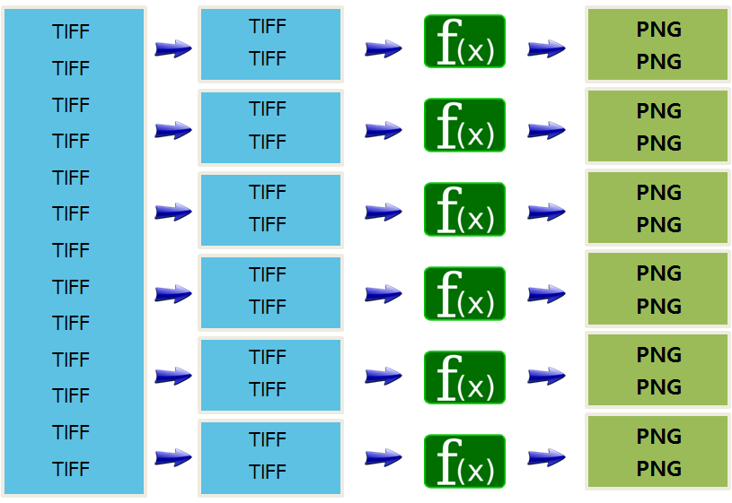

데이터 과학
뉴욕타임즈 기사 병렬처리 사례
학습 목표
- 병렬 컴퓨팅을 이해한다.
- 뉴욕타임즈 시간여행 기사 이미지지 병렬 알고리즘 사례를 살펴본다.
1. 뉴욕타임즈 시간여행 사례
시간여행(TimeMachine) 서비스는 1851-1922년 (퍼블릭 도메인) 신문기사 전체를 스캔해서 데이터형태로 저장했다.
- 시간여행 웹친화적 서비스가 되기 전 모습
- 405,000 TIFF 이미지
- 3.3 백만 SGML, 405,000 XML
- 시간여행 웹친화적 서비스가 된 후 모습
- 810,000 PNG 이미지 (섬네일조각 이미지와 전체 이미지)
- 405,000 자바스크립트 파일
- 총 처리시간: 36시간
- 작업방법 : AWS EC2/S3/Hadoop 활용
- 수백대 가상 컴퓨터를 병렬 처리

참고: The New York Times Archives + Amazon Web Services = TimesMachine